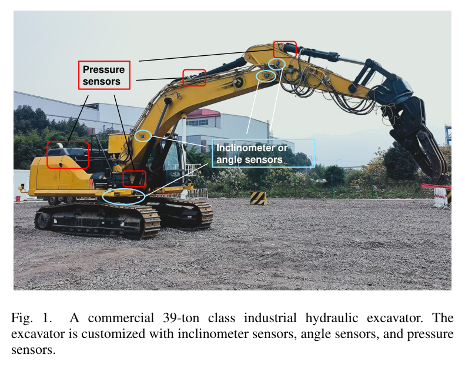
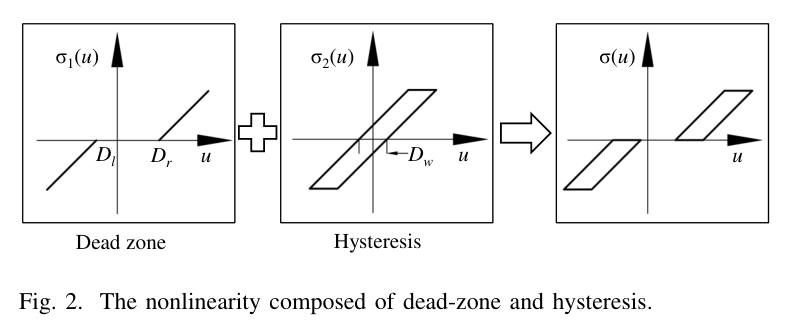
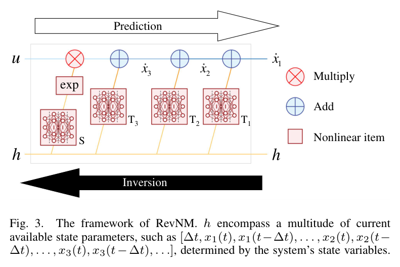
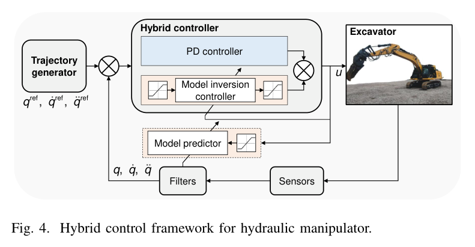
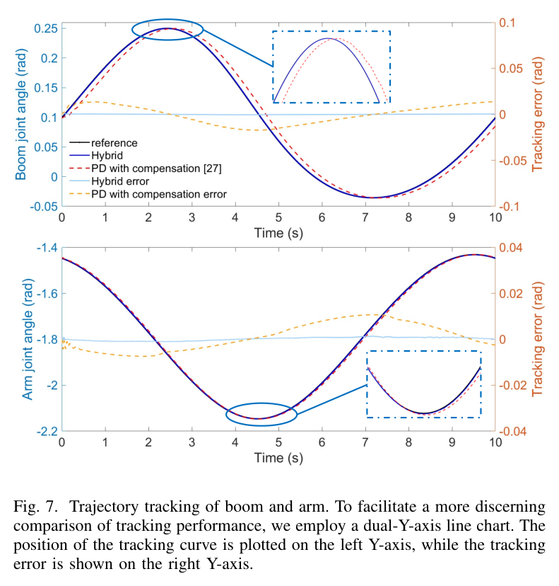
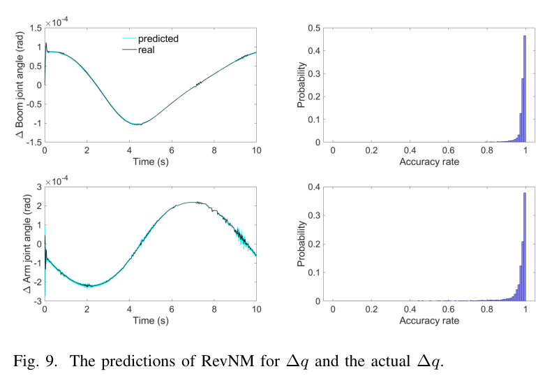
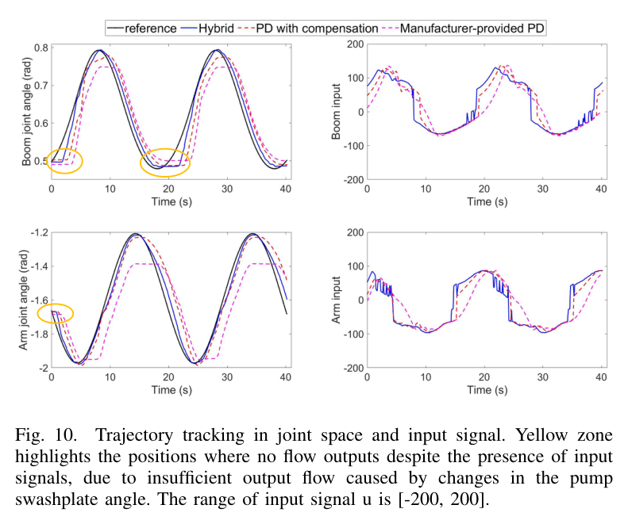
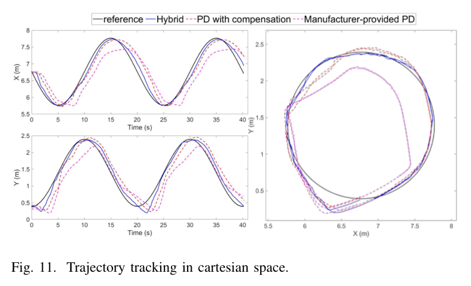

39톤 굴착기,
경로 오차 5.7cm
물리 구조를 아는 학습의 힘
밸브 입력에서 관절각까지, 세 번의 적분을 모델의 뼈대로 삼았다. 그 위에 되돌릴 수 있는 신경망을 얹자, 하나의 모델이 움직임을 예측하고 필요한 제어 입력까지 계산한다.

- 실차 원 궤적 · 경로 RMSE
- 5.7cm
- 원격 통신 주기
- 20Hz
- 실차 학습 데이터
- 4.2시간
RevNM 역모델 + PD 하이브리드
UDP · 약 50 ms 간격
약 30만 스텝의 추종 데이터
구조는 물리에서, 복잡성은 데이터에서
이 연구는 상용 대형 굴착기의 유압 동역학을 3차 적분기 사슬로 정리하고, 그 구조 위에 신경망 비선형 항을 결합한 가역 비선형 모델(RevNM)을 제안한다. 순방향 예측과 역방향 입력 계산에 같은 학습 파라미터를 사용하며, 백스테핑 역모델 제어기와 PD를 결합해 실제 장비를 제어한다. AMESim–Simulink 공동 시뮬레이션과 39톤 굴착기 실험에서 검증했고, 실차 원 궤적 시험의 경로 RMSE는 5.7cm, 궤적 RMSE는 13.5cm로 보고됐다.
읽은 판은 arXiv:2411.13856v1(2024-11-21)이다. 원 노트의 2026년 저널 서지 정보는 별도로 표기한다. 아래 식 번호·그림 번호·결과 수치는 제공된 논문 노트를 기준으로 정리했다.
예측과 제어가 하나의 모델을 공유한다
순방향·역방향 모델을 각각 만드는 대신, 대수적으로 되돌릴 수 있는 구조를 학습해 두 계산을 연결한다.
성능 개선 폭은 비교 대상과 지표에 따라 다르다
데드존 보상 PD 대비 경로 RMSE는 약 46.2%, 궤적 RMSE는 약 52.1% 감소했다. “50% 이상 개선”이라는 표현에는 지표 구분이 필요하다.
안정성 보장은 조건부 유계성이다
적합 오차와 외란이 유계라는 가정 아래 UUB를 보인다. 모든 운전 조건에서 오차가 0으로 수렴한다는 뜻은 아니다.
유압 회로를 몰라도
정밀하게 움직일 수 있을까
상용 굴착기는 사람의 조작을 전제로 설계된다. 자동 제어에 필요한 유압 회로 정보는 공개되지 않는 경우가 많고, 기름의 압축성, 서보밸브의 데드존과 히스테리시스, 내부 누설, 공유 펌프에 의한 결합이 움직임에 함께 영향을 준다. 같은 크기의 명령이라도 상태와 직전 동작에 따라 반응이 달라질 수 있다.
순수 블랙박스 학습은 이런 복잡성을 흡수할 수 있지만, 예측 모델과 제어용 역모델을 별도로 학습하면 두 모델의 일관성이 자동으로 확보되지 않는다. 학습 데이터 밖에서의 거동과 폐루프 안정성도 따로 다뤄야 한다. 이 연구의 선택은 알 수 있는 물리 구조를 먼저 고정하고, 알기 어려운 비선형 항을 학습하는 것이다.
| 항목 | 구성 |
|---|---|
| 관절각 | 붐·암·버킷 경사계, 선회 내장 각도센서 |
| 압력 | 실린더 및 유압 모터 압력센서 |
| 통신 | 캐빈 전송 컴퓨터 ↔ 제어 컴퓨터, UDP, 약 50ms 간격 |
| 제어 명령 | 비례 솔레노이드 밸브 스풀 명령, 범위 [−200, 200] |
입력과 각도 사이에 놓인
세 번의 적분
기구의 운동 방정식과 압력 동역학을 연결하면, 입력이 각도의 3차 미분에 나타난다.
각가속도 변화율에 작용
힘이 만드는 운동 변화
각가속도의 적분
각속도의 적분
기구에서 실린더로
실린더 변위 y에 대한 운동 방정식은 관성·코리올리 항·중력과 실린더 힘의 관계를 표현한다. 실린더 힘은 두 챔버의 압력과 유효 면적, 마찰력으로 정해진다.
P₁·P₂: 챔버 압력 · A₁·A₂: 유효 면적 · Ff: 마찰력 · Fe: 외력 항
실린더에서 밸브로
압력은 즉시 바뀌지 않는다. 유입·유출 유량, 피스톤 운동, 내부 누설에 따라 시간적으로 변한다. 이 압력 동역학을 기구의 운동 방정식과 결합하는 것이 3차 구조의 핵심이다.
βe: 유효 체적탄성계수 · Ct: 내부 누설 계수 · Cdi: 유량 계수 · ωi: 스풀 면적 기울기 · ρ: 유체 밀도. 밸브 시정수는 유압 동역학보다 충분히 작다고 보고 무시한다.

관절각을 q라 하고 x₁ = q, x₂ = q̇, x₃ = q̈로 두면, 노트가 정리한 상태공간 표현은 다음과 같다. 압력의 시간 변화가 각가속도 변화율, 즉 각도의 3차 미분인 jerk에 연결된다.
복잡한 유압계를 모두 알아내기보다,
입력이 운동에 닿는 순서를 먼저 안다.
앞으로는 예측하고,
뒤로는 입력을 계산한다
RevNM · Reversible Nonlinear Model
RevNM은 물리에서 얻은 사슬의 각 단계에 MLP 비선형 항 Ti를 더한다. 입력에 곱해지는 항은 eS로 표현한다. 이 항이 0이 되지 않도록 구성하면, 순방향 계산을 뺄셈과 역수 곱셈으로 되돌릴 수 있다.
상태·이력과 입력으로 상태 변화율을 계산한다.
같은 학습 항을 사용해 필요한 입력을 역산한다.

| 구성 요소 | 역할과 구현 |
|---|---|
| 이력 입력 h | 시간 간격 Δt와 현재·과거 상태를 묶어 입력한다. 예: [Δt, x₁(t), x₁(t−Δt), …, x₃(t−Δt), …]. |
| Ti(h) | 각 단계의 비선형 보정 항. 노트 기준 2층, 64유닛 ReLU MLP를 사용한다. |
| S(h) | MLP 출력을 atan과 clamp로 제한한다. eS(h)의 크기를 제어하고 역산 가능한 곱셈 항을 만든다. |
| 학습 | PyTorch·Adam, min-max 정규화와 잡음 필터링. 순방향 손실 LossY와 역방향 손실 LossX를 함께 최소화한다. |
발상은 NICE·RealNVP 계열의 가역 변환과 닿아 있지만, 여기서는 물리 사슬에 맞춰 구조를 만든다. 따라서 일반적인 동일 차원 입출력 가역망의 형태를 그대로 따를 필요가 없다. 별도 역모델을 추가로 학습하지 않아도 같은 파라미터로 두 방향을 계산한다는 점이 핵심이다.
가역성과 모델 정확도는 별개의 조건
식을 되돌릴 수 있다는 것은 모델 내부의 계산 구조에 대한 성질이다. 실제 장비를 정확히 표현한다는 보장은 학습 데이터, 상태 추정, 모델 오차에 달려 있다. 역산이 가능하다는 사실만으로 임의의 목표 운동이 장비에서 실현되는 것은 아니다.
역모델의 정밀함에
PD의 피드백을 더하다
실제 제어기는 RevNM 역모델과 PD를 결합한다. PD는 큰 오차에 대한 수렴과 강인성을 담당하고, 역모델은 유압계의 비선형성을 보상한다. 신경망 적합 오차의 영향을 줄이기 위해 역모델의 입출력도 제한한다.

- 01목표 운동을 만든다.
궤적 생성기가 추종할 관절 운동의 기준을 제공한다. - 02가상 제어를 순차적으로 설계한다.
백스테핑으로 α₂, α₃를 구성하고 상태 오차를 연결한다. - 03역모델과 피드백을 결합한다.
학습한 비선형 항을 보상하면서 PD와 함께 장비를 구동한다.
z₁은 위치 추종 오차, kᵢ는 설계 이득이다. 식에서는 h 의존성을 생략했다. 실제 구현에서는 상태와 미분 항을 어떻게 안정적으로 얻을지가 중요하다.
UUB: 오차가 일정한 범위 안에 머문다는 보장
정리 1은 적합 오차와 외란이 유계(‖dᵢ‖ ≤ dmax)이고 kᵢ > 0.5일 때, Lyapunov 분석과 Young 부등식을 통해 오차 신호의 균일 궁극 유계성 (uniform ultimate boundedness, UUB)을 보인다. 식 (24)–(32)의 경계는 오차·외란과 설계 이득에 의존한다. 이는 아래 실험에서 얻은 5.7cm를 이론적으로 보장하는 주장과는 구분된다.
모델의 설득력은
실제 움직임에서 확인된다
시뮬레이션으로 비선형 응답을 검증하고, 상용 장비의 원 궤적 추종으로 비교했다.
검증 A · AMESim–Simulink 공동 시뮬레이션
붐·암 2자유도 모델에서 데드존, 히스테리시스, 누설을 포함한 유압계를 구성했다. 무작위 사인 입력 10,000회로 약 50시간의 데이터를 만들었으며, 샘플링 간격은 1–10ms 범위에서 무작위로 설정했다.
| 항목 | 설정 |
|---|---|
| 펌프 | 압력 200bar · 최대 유량 600L/min |
| 피스톤 / 로드 지름 | 피스톤 0.35 / 0.18m · 로드 0.22 / 0.125m |
| 행정 / 링크 길이 | 행정 1.8 / 1.7m · 링크 7.2 / 2.9m |
| 질량 / 관성 | 8,000 / 2,920kg · 38,500 / 3,600kg·m² |
| 점성 마찰 / 누설 | 10⁵N/(m/s) · 0.005L/min/bar |
| 데드존 [Dl, Dr] | 붐 [−0.2, 0.1] · 암 [−0.1, 0.2] |
| 히스테리시스 폭 | 0.05 |


검증 B · 39톤 상용 굴착기 실험
실차 데이터는 제조사 PD로 무작위 3차 스플라인을 추종하며 수집했다. 붐의 이득은 kP = 300, kD = 3, 암은 kP = 200, kD = 1.8이다. 수집량은 약 30만 스텝, 약 4.2시간이다.
위치를 m, 시간을 s로 읽으면 반지름 1m, 주기 20초의 원이다. 실차 제어 대상은 붐·암이다.


| 평가 지표 | 하이브리드 | 데드존 보상 PD | 제조사 PD |
|---|---|---|---|
| 경로 RMSE | 5.7 | 10.6 | 27.4 |
| 궤적 RMSE | 13.5 | 28.2 | 48.7 |
경로 RMSE · 같은 시험에서의 비교
감소율은 표의 수치로 계산했다: (비교값 − 하이브리드값) / 비교값. 막대 길이는 제조사 PD의 경로 RMSE 27.4cm를 기준으로 한다.
5.7cm가 말하는 것과 말하지 않는 것
5.7cm는 이 원 궤적 시험의 경로 RMSE다. 궤적 RMSE는 13.5cm이며, 두 지표를 섞어 쓰면 성능을 과장할 수 있다. 일반적으로 경로 평가는 공간상의 이탈, 궤적 평가는 시간에 맞춘 추종까지 다루지만, 이 연구의 정확한 계산 정의는 원문을 기준으로 확인해야 한다. 이 결과만으로 굴삭 작업 전체나 다른 하중·속도에서 같은 정밀도를 보장하지는 않는다.
HR35에 가져올 것은
숫자보다 설계의 순서다
먼저, 검증의 경계를 확인한다
- 실차 검증은 붐·암에 한정된다. 선회·버킷을 포함한 전체 자유도와 실제 굴삭 작업에 대한 확장은 남아 있다.
- 통신 지연은 모델 밖에 있다. 20Hz 운용에서의 성공을 지연·지터에 대한 일반적 강인성 보장으로 읽을 수는 없다.
- 압력 자체를 예측하지 않는다. 압력 동역학은 3차 운동 구조에 흡수된다.
- 예측 모델의 MPC 결합은 향후 과제다. 슬라이딩 모드 등 다른 제어기와의 결합, 실제 작업 적용도 후속 방향으로 제시된다.
HR35 관점의 해석과 검증 과제
아래는 원 노트 작성자의 적용 의견을 정리한 내용이다. HR35의 센서·트윈 구성에 관한 설명은 노트의 전제를 따르며, 해당 장비에서 검증된 결과를 뜻하지 않는다.
| 논문의 단서 | HR35에 주는 의미 | 다음 검증 |
|---|---|---|
| 경사계·압력센서·20Hz 노트상 HR35와 유사한 구성 |
20Hz가 정밀 제어를 원천적으로 불가능하게 하는 조건은 아니라는 사례다. | 지연·지터·센서 잡음·동작 속도가 유사한지 측정한다. |
| 각가속도와 상태 이력 3차 구조에 필요한 상태 정보 |
저주기 경사계 신호의 미분과 필터 지연이 구현의 핵심 과제가 된다. | 스플라인·여과 회귀 등 상태 추정 방법의 잡음과 지연을 비교한다. |
| 데드존 + 히스테리시스 입력 방향에 따른 응답 차이 |
데드밴드만 있는 밸브 모델에 폭 Dw를 추가할 근거가 될 수 있다. | 조이스틱 왕복 시험으로 방향별 응답과 히스테리시스 폭을 식별한다. |
| 입력은 있지만 유량은 없음 펌프와 밸브 명령의 결합 |
명령 전달계에 장비 고유의 펌프 제어 논리가 포함될 수 있다. | 조이스틱·밸브 명령과 펌프 제어의 결합 여부를 확인한다. |
| 물리 사슬 + 학습 항 구조를 가진 데이터 모델 |
기존 트윈을 기반으로 보정 항을 학습하는 변형을 검토할 수 있다. | 트윈의 f, g와 Ti, S를 어떻게 연결할지 설계하고, 가역성 조건을 재검토한다. |
상태 이력은 미분 문제를 자동으로 없애지 않는다
과거 상태를 입력하는 h는 이력 의존성을 표현하는 데 도움을 줄 수 있다. 그러나 제시된 모델은 각속도·각가속도를 포함하고, 제어 법칙에도 미분 항이 등장한다. 이력을 넣는 것만으로 상태 추정이나 필터링이 불필요해진다고 해석해서는 안 된다.
적용 전에 답해야 할 네 가지 질문
- 20Hz 신호에서 각속도·각가속도를 추정할 때 잡음과 지연을 얼마나 허용할 수 있는가?
- 왕복 입력에서 데드존과 히스테리시스를 구분해 식별할 수 있는가?
- 밸브 명령과 펌프 제어가 결합하는 구간을 데이터에 충분히 포함했는가?
- 하중·속도·작업 조건을 바꿔도 경로 오차와 시간 추종 오차가 함께 개선되는가?
좋은 물리 구조는
학습의 역할을 더 선명하게 만든다.
이 연구의 인상적인 지점은 5.7cm라는 수치와 함께, 예측과 제어가 같은 모델을 공유하도록 설계했다는 것이다. 알려진 물리는 계산의 뼈대가 되고, 데이터는 복잡한 비선형성을 채운다. 다음 과제는 이 구조를 더 다양한 하중과 실제 작업으로 확장하며, 어떤 조건에서 성능이 유지되는지 확인하는 일이다.
출처와 읽기 안내
-
Dexian Ma, Yirong Liu, Wenbo Liu, Bo Zhou.
“A Data-Driven Modeling and Motion Control of Heavy-Load Hydraulic Manipulators via Reversible Transformation.”
Southeast University, Nanjing · Key Laboratory of Measurement and Control of Complex Systems of Engineering. 읽은 판: arXiv:2411.13856v1, 2024-11-21. - 저널 서지. 원 노트는 IEEE Transactions on Industrial Electronics, 2026, DOI: 10.1109/TIE.2025.3645454로 기록한다. 이 글은 제공된 노트를 편집한 것으로, 저널 최종판과 arXiv v1 사이의 변경 사항은 대조하지 않았다.
- 그림과 수치. 그림 1·2·3·4·7·9·10·11은 제공된 논문 그림을 사용했다. 그림 번호와 수식 번호는 원 노트의 표기를 따른다. RMSE는 노트의 표 II에서 옮겼으며, 오차 감소율은 해당 수치로 계산해 소수 첫째 자리까지 반올림했다. 인용 그림의 권리는 원 저작권자에게 있다.
- 편집과 해석. 제목·소제목·도식·강조 문장은 이해를 돕기 위해 재구성했다. HR35 적용 제안은 노트 작성자의 해석이며 논문의 실험 결과와 구분된다. 비교 데이터가 제시되지 않은 “블랙박스보다 적은 데이터”라는 주장은 이 글의 확정적 결론으로 삼지 않았다.